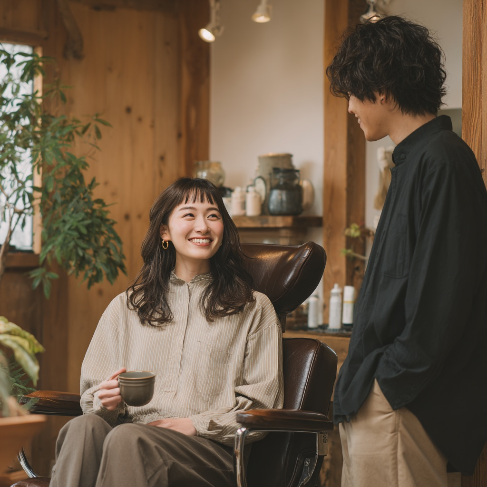
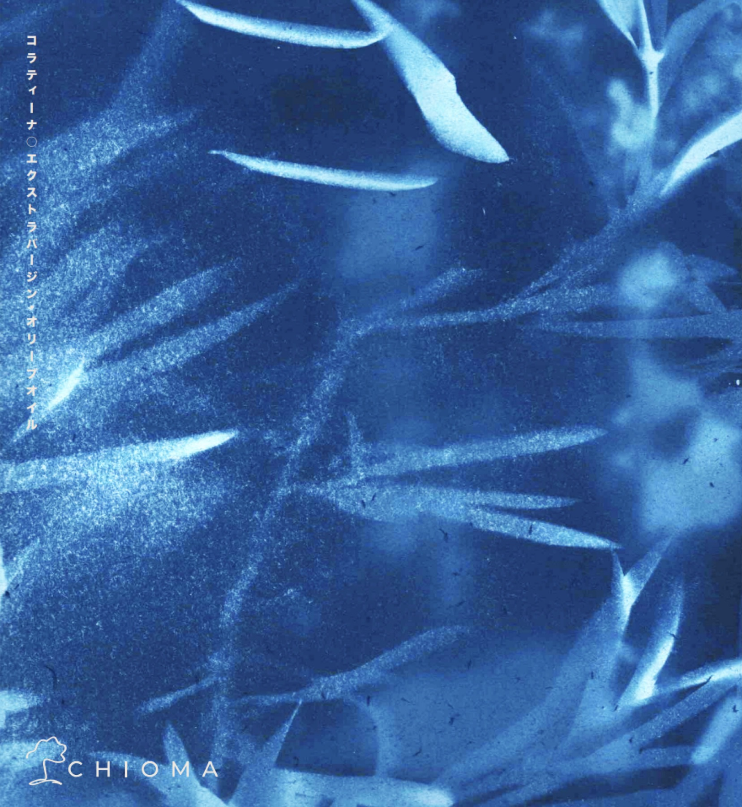
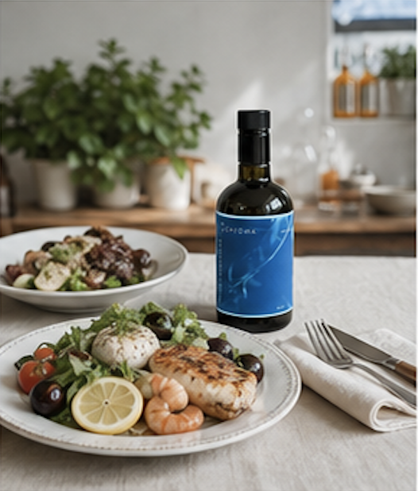

ポリフェノール総量 400〜600mg/kg
一般的なEVOOの目安とされる〜150mg/kgに比べ、高いポリフェノール量を持つコラティーナ種。苦味と辛味は成分の豊かさを伝える特徴です。
Ole Shot Trend / Dealer & Salon Proposal
CHIOMAは、イタリア・プーリア州コラート産コラティーナ種100%のエクストラバージンオリーブオイル。朝のオレショット、腸活、インナーケアに関心の高いお客様へ、サロンから自然に提案できる食品店販です。
ディーラー・サロン様向け資料 ／ 予約販売方式 ／ 食品です。医薬品ではありません。

Market Trend
オレショットは、朝の空腹時にエクストラバージンオリーブオイル約10mlとレモン果汁を合わせて飲む美容・健康習慣。韓国ではSNS、アイドル・女優の発信、ドラッグストア検索の増加をきっかけに「飲む美容ルーティン」として注目されています。
日本でも韓国美容、腸活、インナーケアへの関心は高まり続けています。サロンは髪だけでなく、肌・頭皮・食事・暮らしの相談が生まれる場所。CHIOMAは、その会話から自然に提案できる新しい店販商材です。


Salon Opportunity
オレショットの入り口として、CHIOMAの10mlパウチは1回分をそのまま試せる体験ツールです。「韓国で流行っている朝の美容習慣」と紹介できるため、食品店販が初めてのサロンでも会話をつくりやすくなります。
 10mlパウチで体験し、気に入った方へ500mlボトルを予約販売。棚スペースも在庫リスクも抑えて始められます。
10mlパウチで体験し、気に入った方へ500mlボトルを予約販売。棚スペースも在庫リスクも抑えて始められます。
No Inventory Risk
10mlパウチで味と使い方を体験してもらう。
購入希望のお客様分だけ注文をまとめる。
食品ロスと在庫負担を抑えて導入できる。
習慣化したお客様へ本品・ギフトを提案。
Product

CHIOMAは、大分市でオーガニック美容室を20年経営してきた山村剛司が、イタリア・プーリア州コラートで出会った生産者との信頼関係から届けるオリーブオイルです。商社を通さず、テドーネ農園との直接のつながりを大切にしています。


Ingredient & Evidence
一般的なEVOOの目安とされる〜150mg/kgに比べ、高いポリフェノール量を持つコラティーナ種。苦味と辛味は成分の豊かさを伝える特徴です。
エクストラバージンオリーブオイル基準の0.8%以下を大きく下回る品質目安。フレッシュな状態を大切にした商品です。
高品質EVOOに含まれるフェノール化合物として研究されている成分。美容意識の高いお客様へ、一般的な成分情報として共有しやすい切り口です。
※CHIOMAは食品です。特定の疾病の予防・治療を目的とするものではなく、効能・効果を標榜するものではありません。
Recommended Use
10mlのオリーブオイルとレモン果汁を朝に。韓国美容トレンドとして紹介しやすい使い方です。
就寝前に10mlをそのまま。毎日続けやすい分量として、パウチ提案にも向いています。
サラダ、パスタ、パン、スープなどに。加熱せず仕上げに使うと、香りと風味を楽しめます。
30個・80個のパウチは、来店後の体験配布やキャンペーン、ギフト提案にも活用できます。



Dealer Price List / 2026.05

Bottle
ディーラー仕入価格（税別）
サロン卸：¥6,500 ／ 参考小売：¥9,800

Pouch S
ディーラー仕入価格（税別）
サロン卸：¥4,400 ／ 参考小売：¥6,500
Pouch L
ディーラー仕入価格（税別）
サロン卸：¥10,000 ／ 参考小売：¥15,000
FAQ
導入前に、まず味・香り・オレショットとしての提案方法を確認いただけます。詳細はお問い合わせ時にご案内します。
予約販売方式のため、売れた分だけ発注しやすい設計です。ロットや納期は取引条件に合わせてご案内します。
いいえ。CHIOMAは食品です。成分に関する一般的な情報や、食習慣としての取り入れ方をご案内ください。疾病の予防・治療や効能効果をうたう表現は避けてください。
賞味期限は製造から18ヶ月（未開封）です。直射日光・高温多湿を避けて常温保存し、開封後は3ヶ月以内を目安にご使用ください。
「韓国で話題のオレショットをご存知ですか？」をきっかけに、10mlパウチを1回分として試してもらう流れがおすすめです。気に入った方へ500mlボトルを予約販売で提案できます。